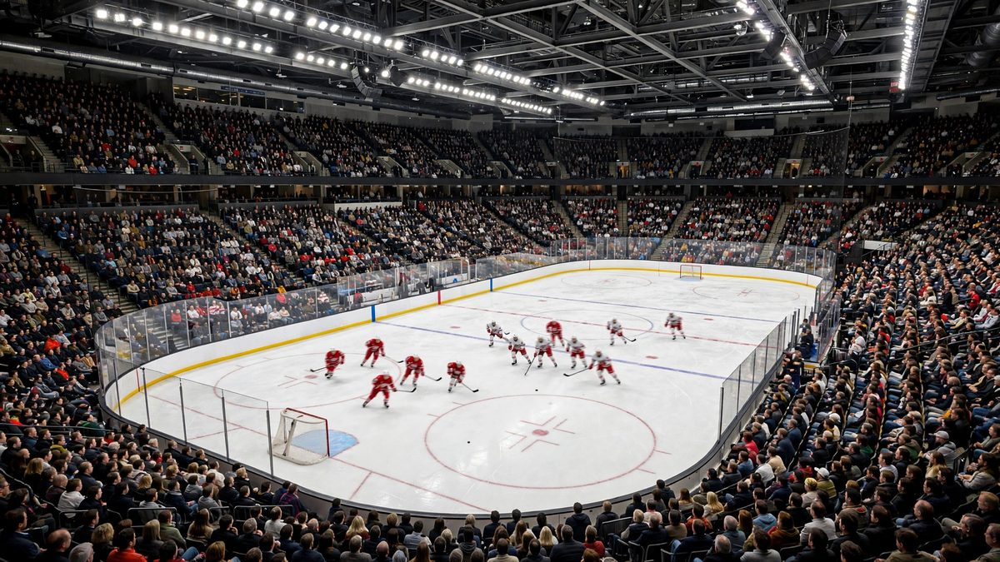

Frozen Frenzy: NHL का सबै ३२ टोली खेले, ब्लुज र प्यान्थर्सले सात गोल गरे
अक्टोबर १३ मा Frozen Frenzy का १६ खेलमा NHL का सबै ३२ टोली खेले, सेन्ट लुइस र फ्लोरिडाले सात सात गोल गरे, बोस्टनले लगातार तेस्रो जित निकाल्यो र लस एन्जलसले लगातार पाँचौं हार बेहोर्यो।

मुख्य बुँदाहरू
- NHL का सबै ३२ टोली मंगलबार, अक्टोबर १३ मा लिगको Frozen Frenzy मा खेले, र त्यो रातले प्रशंसकलाई एकैपटक १६ वटा अन्तिम स्कोर दियो। सेन्ट लुइस र फ्लोरिडाले सात सात गोल गरेर अगाडि रहे, बोस्टनले लगातार…
- ब्लुजले ओटावा सेनेटर्सलाई ७-२ ले हरायो, जुन रातकै सबैभन्दा ठूलो अन्तर थियो। फ्लोरिडा प्यान्थर्सले कोलम्बस ब्लु ज्याकेट्समाथि ७-३ को जितमा त्यही गोल संख्या बराबर गर्यो। नाटकको अर्को छेउमा, न्यु…
- Frozen Frenzy रातका सबै अन्तिम स्कोर यहाँ छन्, विजेता पहिले राखिएको छ:
NHL का सबै ३२ टोली मंगलबार, अक्टोबर १३ मा लिगको Frozen Frenzy मा खेले, र त्यो रातले प्रशंसकलाई एकैपटक १६ वटा अन्तिम स्कोर दियो। सेन्ट लुइस र फ्लोरिडाले सात सात गोल गरेर अगाडि रहे, बोस्टनले लगातार तेस्रो जित निकाल्यो, र लस एन्जलसले सिजनको सुरुमा लगातार पाँचौं हार बेहोर्यो।
ब्लुजले ओटावा सेनेटर्सलाई ७-२ ले हरायो, जुन रातकै सबैभन्दा ठूलो अन्तर थियो। फ्लोरिडा प्यान्थर्सले कोलम्बस ब्लु ज्याकेट्समाथि ७-३ को जितमा त्यही गोल संख्या बराबर गर्यो। नाटकको अर्को छेउमा, न्यु जर्सीले डेट्रोइटलाई ५-४ ले हराउन ओभरटाइम चाहियो, भने मोन्ट्रियल र सिएटल दुवैले सुटआउटमा जिते।
सबै नतिजा
Frozen Frenzy रातका सबै अन्तिम स्कोर यहाँ छन्, विजेता पहिले राखिएको छ:
- New Jersey Devils 5, Detroit Red Wings 4 (overtime)
- Florida Panthers 7, Columbus Blue Jackets 3
- Montreal Canadiens 4, Buffalo Sabres 3 (shootout)
- Carolina Hurricanes 4, Washington Capitals 2
- Seattle Kraken 3, Philadelphia Flyers 2 (shootout)
- New York Rangers 4, Tampa Bay Lightning 1
- St. Louis Blues 7, Ottawa Senators 2
- New York Islanders 3, Vancouver Canucks 2
- Chicago Blackhawks 5, Pittsburgh Penguins 3
- Winnipeg Jets 5, Minnesota Wild 2
- Colorado Avalanche 3, Dallas Stars 2
- Vegas Golden Knights 5, Nashville Predators 2
- Utah Mammoth 5, Toronto Maple Leafs 4
- Calgary Flames 4, Anaheim Ducks 2
- Edmonton Oilers 4, Los Angeles Kings 1
- Boston Bruins 6, San Jose Sharks 3
सूची माथिदेखि तल पढ्दा रातको आकार छिट्टै देखिन्छ। नजिकका खेलहरू बाँडिए, सुटआउट र ओभरटाइम खेल एक गोलले टुंगिए, र ठूला जित जोडीमा आए, जसमा सेन्ट लुइस, फ्लोरिडा र बोस्टनले आआफ्नो जितमा छ वा बढी गोल गरे।
बोस्टन अगाडि, लस एन्जलस पछाडि
बोस्टनले सान होसेलाई ६-३ ले हरायो, र यो जित ब्रुइन्सको लगातार तेस्रो थियो। यसले उनीहरूलाई सिजनमा ५-२-० मा पुर्यायो। चार्ली म्याकआभोयले छ खेलको निलम्बनपछि सिजनको पहिलो खेलमा गोल गरे, जेरेमी स्वेम्यानले गोलमा ३५ बचाउ गरेर शार्क्सलाई रोके।
लस एन्जलसको रात त्यसको उल्टो भयो। किङ्स एडमन्टनसँग ४-१ ले हार्यो र जितविहीन रह्यो, प्रशिक्षक Peter Laviolette को नेतृत्वमा सिजनको सुरुमा लगातार पाँचौं हार। यस्तो सुरुवातले अर्को हरेक खेललाई दबाबको खेल बनाउँछ, र किङ्सले नरोकिने तालिकामा अब जित खोज्नुपर्छ।
कोनर म्याकडेभिडले त्यो जितमा एडमन्टनका लागि चार अंक बनाए, लस एन्जलसविरुद्ध एक गोल र तीन असिस्टसहित। म्याकडेभिडको रातबारे हामी उनको ८००औं करियर खेलसम्बन्धी छुट्टै लेखमा विस्तारमा लेख्छौं।
रेन्जर्स, युटा र क्यानाडाको बाँडफाँड
एलेक्सिस लाफ्रेनियरले न्युयोर्क रेन्जर्सका लागि टाम्पा बे लाइटनिङमाथि ४-१ को जितमा दुई गोल गरे। यो त्यस्तै रात थियो जुन रेन्जर्सले उनीबाट नियमित चाहन्छन्, पहिलो पिरियडपछि उनको टोलीले नियन्त्रण गरेको खेलमा दुई राम्रा अन्त्य।
युटाले टोरन्टोलाई झट्का दियो र अग्रता जोगाउने पाठ पनि। म्यामथले मेपल लिफ्समाथि ४-१ को अग्रता बनायो, त्यसलाई ५-२ मा पुर्यायो, र अन्तमा ५-४ ले जित जोगायो। जोन टाभारेस र नयाँ खेलाडी Gavin McKenna ले टोरन्टोको तेस्रो पिरियडको दबाबमा गोल गरे, तर फिर्तीका लागि समय सकियो।
छवटा क्यानाडाली टोलीले रात आधा आधा बाँडे। विनिपेगले मिनेसोटालाई ५-२ ले हरायो, मोन्ट्रियलले बफेलोलाई सुटआउटमा ४-३ ले हरायो, र क्यालगरीले एनाहाइमलाई ४-२ ले हरायो। टोरन्टो युटासँग हार्यो, ओटावा सेन्ट लुइसमा ठूलो अन्तरले हार्यो, र भ्यानकुभर न्युयोर्क आइल्यान्डर्ससँग ३-२ ले हार्यो।
रातको अर्थ
Frozen Frenzy एउटा प्रदर्शनका रूपमा बनाइएको हो, प्रशंसकले एकै बसाइमा सबै खेल पछ्याउन सक्ने गरी सुरु हुने समय फरक फरक राखिन्छ। यस्ता रातले लिगको प्रारम्भिक झलक पनि दिन्छ। बोस्टन स्थिर देखिन्छ। फ्लोरिडाले अझै छोटो समयमा धेरै गोल गर्न सक्छ। एडमन्टनमा कप्तानले खेल चलाउन थालिसकेका छन्। त्यसको विपरीत, लस एन्जलससँग वास्तविक काम बाँकी छ, र लगातार पाँच हारपछि Peter Laviolette को टोली सिजनको सुरुको स्पष्ट चिन्ता हो।
बाँकीका लागि रात सन्देश र बाँच्ने प्रयासको मिश्रण थियो। कोलोराडोले ड्यालसलाई ३-२ ले हरायो। भेगासले न्यासभिललाई ५-२ ले हरायो। सिकागोले पिट्सबर्गविरुद्ध पाँच गोल गर्यो। विनिपेगले मिनेसोटालाई नियन्त्रण गर्यो। अक्टोबरमा कुनै पनि नतिजाले केही टुंगो लगाउँदैन, तर सँगै तिनले तालिका सामान्य लयमा जानुअघि प्रारम्भिक तस्वीर बनाउँछन्।
सोह्र खेल, ३२ टोली, दुई पटक सात गोल, दुई सुटआउट र एक ओभरटाइम। Frozen Frenzy एक लाइनमा यही हो, र यस वर्ष यसले वाचा गरेको हलचल दियो।
मुख्य संख्या
अक्टोबर १३ मा सबै ३२ टोलीले १६ खेल खेले। सेन्ट लुइस र फ्लोरिडाले सात सात गोल गरे, रातकै उच्च संख्या। बोस्टन लगातार तेस्रो जितसँगै ५-२-० मा पुग्यो, र जेरेमी स्वेम्यानले ३५ बचाउ गरे। लस एन्जलसले सिजनको सुरुमा लगातार पाँचौं हार बेहोर्यो। कोनर म्याकडेभिडले एडमन्टनका लागि चार अंक बनाए, र एलेक्सिस लाफ्रेनियरले रेन्जर्सका लागि दुई गोल गरे।